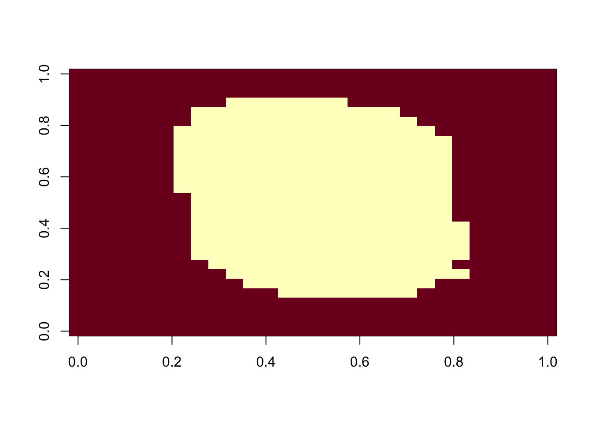
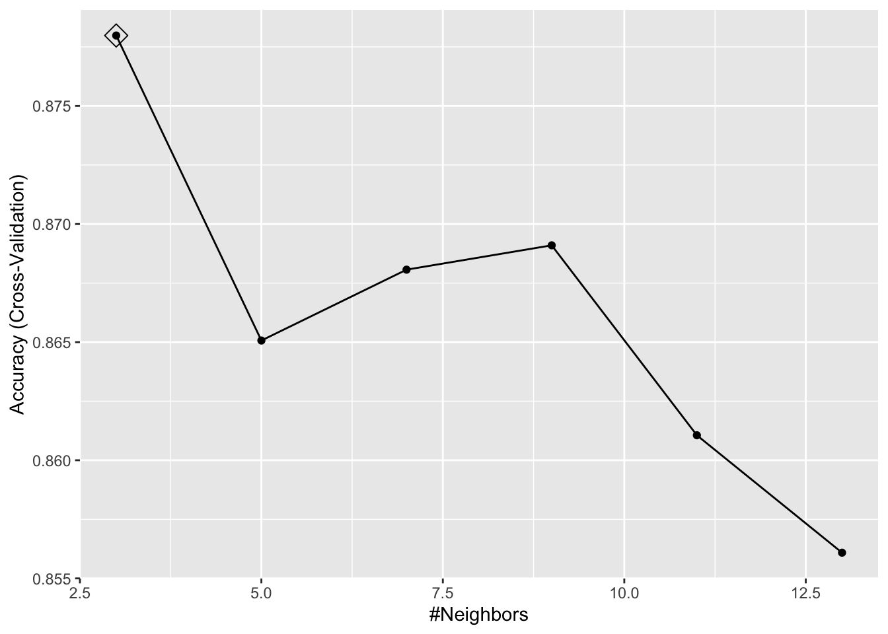
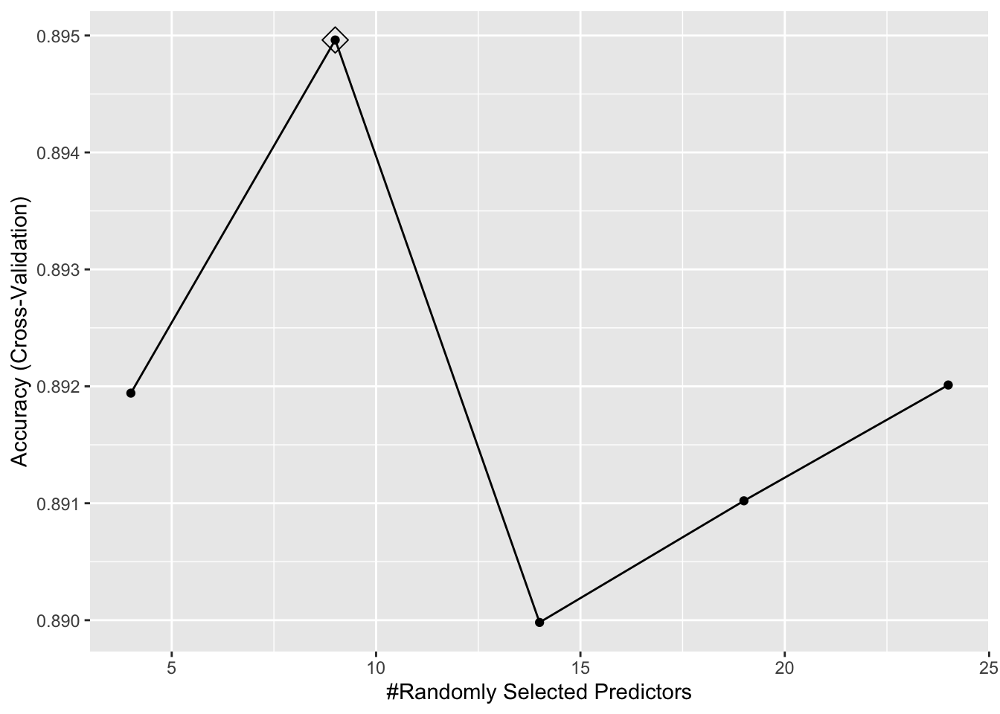
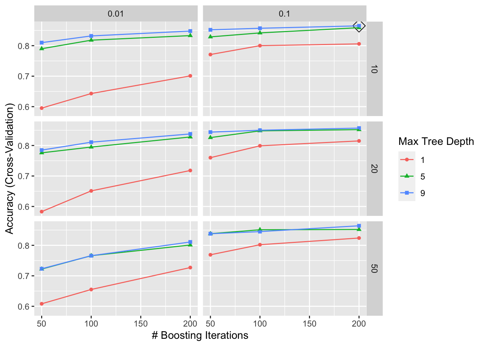
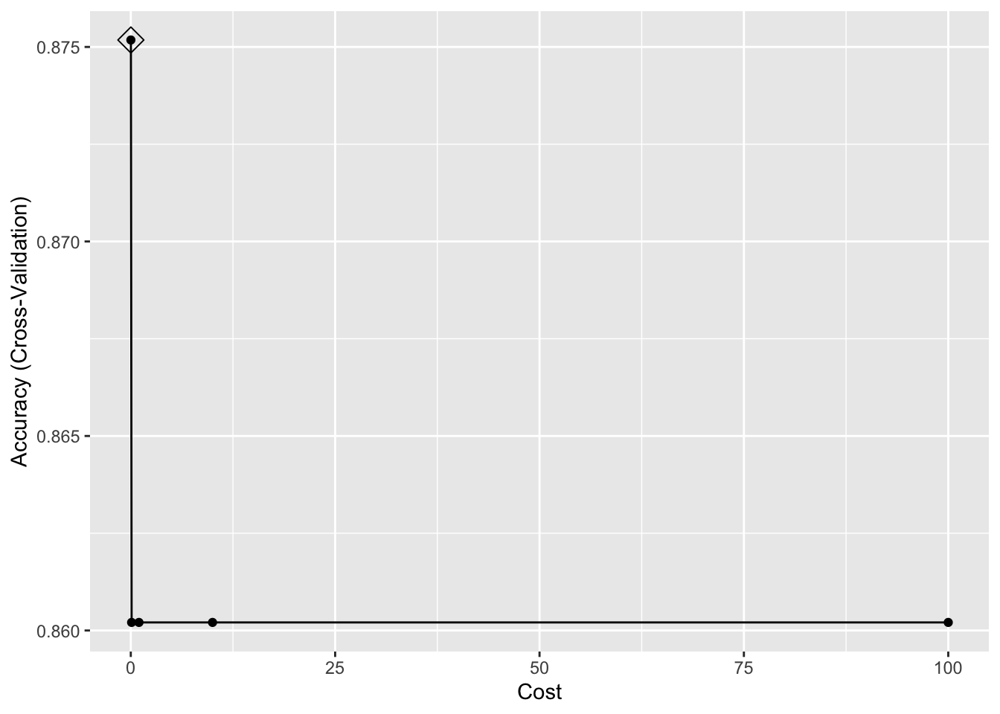
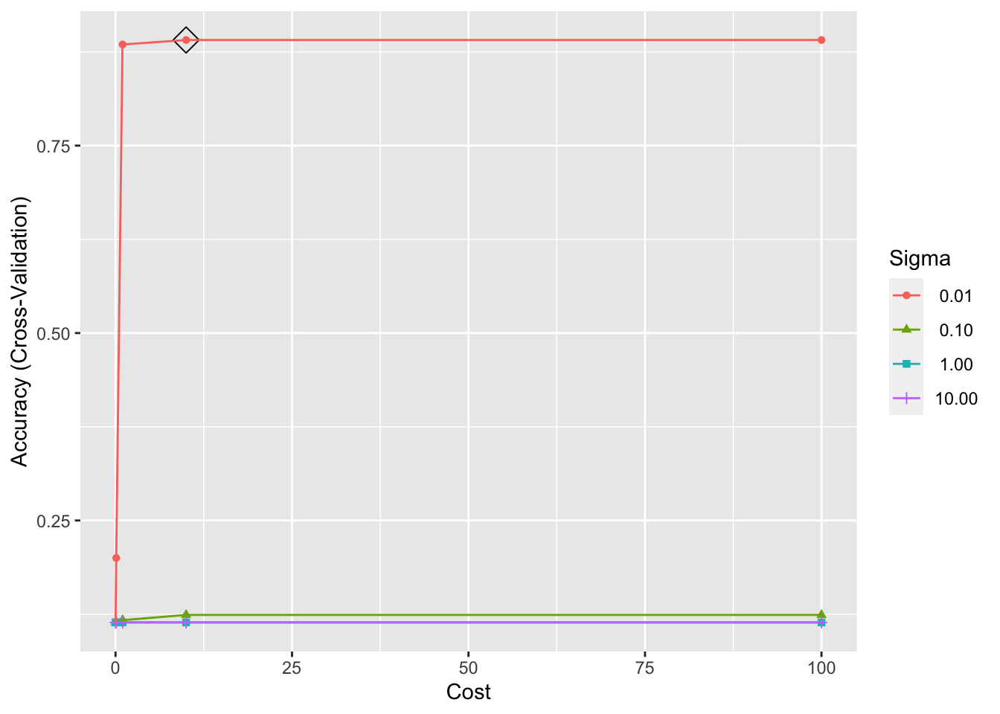

# Load and partition data
library(dslabs)
if (!exists("mnist")) mnist <- read_mnist()
set.seed(2024-2-14)
index <- sample(nrow(mnist$train$images), 1000) # set this to 1,000 instead of 10,000 for compute performance
x <- mnist$train$images[index,]
y <- factor(mnist$train$labels[index])
index <- sample(nrow(mnist$test$images), 1000)
x_test <- mnist$test$images[index,]
y_test <- factor(mnist$test$labels[index])Problem Set 4
Introduction
The MNIST dataset contains 60,000 labeled images of handwritten digits alongside their labeled digit values. In this problem set, we train several machine learning models on a subset of the training set. We load and partition the dataset as follows, noting that we have sampled just 1,000 training examples instead of the recommended 10,000.
Problem 1
Train a kNN model. Report the error rate on the test data only after you decide on a model.
# Load packages
suppressMessages(library(caret))
# Load locally trained models if they exist
if (file.exists("trained_models.RData")) {
load("trained_models.RData")}
# Remove and plot features with near zero variance
nzv <- nearZeroVar(x)
image(matrix(1:784 %in% nzv, 28, 28))
col_index <- setdiff(1:ncol(x), nzv)
# Define column names
colnames(x) <- 1:ncol(mnist$train$images)
colnames(x_test) <- colnames(x)
# Define training data frame
df <- data.frame(x[,col_index], y)
# Assess timing (0.005s)
system.time({knn3(x[, col_index], y, k = 5)}) user system elapsed
0 0 0 # Train knn model (2.095s or 0.035s per run for 60 runs)
if(!exists("trained_knn")) {
system.time({trained_knn <- train(y ~ .,
method = "knn",
data = df,
tuneGrid = data.frame(k = seq(3, 13, 2)), # optional
trControl = trainControl(method = "cv", number = 10, p = .9, verbose = FALSE) # optional
)})}
ggplot(trained_knn, highlight = TRUE)
# Define the best fit (optional)
fitted_knn <- knn3(x[, col_index], y, k = trained_knn$bestTune)
# Make predictions on test set and generate confusion matrix and error rate
eval_model <- function(model, name) {
y_hat <- predict(model, data.frame(x_test[, col_index]))
cm <- confusionMatrix(y_hat, y_test)
paste("The ", name, " model has an error rate of: ", (1-cm$overall[["Accuracy"]])*100,"%", sep = "")
}
eval_model(trained_knn, "knn")[1] "The knn model has an error rate of: 12.1%"Problem 2
Train a Random Forest model. Report the error rate on the test data only after you decide on a model.
# Load packages
suppressMessages(library(randomForest))
suppressMessages(library(ranger))
# Assess timing
system.time({randomForest(x[, col_index], y, mtry = 9)}) # 65.726s user system elapsed
5.739 0.016 5.756 system.time({ranger(y ~ ., data = df, mtry = 9)}) # 0.0147s user system elapsed
0.833 0.008 0.137 # Train random forest model (9.263s or 0.185s per run for 50 runs)
if(!exists("trained_ranger")) {
system.time({trained_ranger <- train(y ~ .,
method = "ranger",
data = df,
tuneGrid = expand.grid(mtry = seq(4, 24, 5),
splitrule = "gini",
min.node.size = 1), # optional
trControl = trainControl(method = "cv", number = 10, p = .9, verbose = FALSE) # optional
)})}
ggplot(trained_ranger, highlight = TRUE)
# Define the best fit (optional)
fitted_ranger <- ranger(y ~ ., data = df, mtry = trained_ranger$bestTune$mtry,
splitrule = trained_ranger$bestTune$splitrule,
min.node.size = trained_ranger$bestTune$min.node.size)
fitted_rf <- randomForest(y ~ ., data = df, mtry = trained_ranger$bestTune$mtry)
# Make predictions and generate confusion matrix on test set
eval_model(trained_ranger, "ranger")[1] "The ranger model has an error rate of: 9.9%"eval_model(fitted_rf, "rf")[1] "The rf model has an error rate of: 9.8%"Problem 3
Train a model of your choosing. Report the error rate on the test data only after you decide on a model.
# Load packages
suppressMessages(library(gbm))
suppressMessages(library(kernlab))
# Assess timing (0.717s)
system.time({suppressWarnings(gbm(y ~ .,
data = df,
interaction.depth = 3,
n.trees = 100,
shrinkage = 0.1,
n.minobsinnode = 10)
)})Distribution not specified, assuming multinomial ... user system elapsed
6.653 0.026 6.710 # Train gbm model (3,545.875s or 6.56s per run for 540 runs)
if(!exists("trained_gbm")) {
system.time({trained_gbm <- train(y ~ .,
method = "gbm",
data = df,
tuneGrid = expand.grid(interaction.depth = c(1, 5, 9),
n.trees = c(50, 100, 200),
shrinkage = c(0.01, 0.1),
n.minobsinnode = c(10, 20, 50)), # optional
trControl = trainControl(method = "cv", number = 10, p = .9, verbose = FALSE) # optional
)})}
# Train linear svm model (25.271s or 0.505s per run for 50 runs)
if(!exists("trained_svm_linear")) {
system.time({trained_svm_linear <- train(y ~ .,
method = "svmLinear",
data = df,
tuneGrid = expand.grid(C = c(0.01, 0.1, 1, 10, 100)), # optional
trControl = trainControl(method = "cv", number = 10, p = .9, verbose = FALSE) # optional
)})}
# Train radial svm model (324.338s or 1.622s per run for 200 runs)
if(!exists("trained_svm_radial")) {
system.time({trained_svm_radial <- train(y ~ .,
method = "svmRadial",
data = df,
tuneGrid = expand.grid(C = c(0.01, 0.1, 1, 10, 100),
sigma = c(0.01, 0.1, 1, 10)), # optional
trControl = trainControl(method = "cv", number = 10, p = .9, verbose = FALSE) # optional
)})}
# Plot parameter tunings
ggplot(trained_gbm, highlight = TRUE)
ggplot(trained_svm_linear, highlight = TRUE)
ggplot(trained_svm_radial, highlight = TRUE)
# Define the best fit gbm (optional)
fitted_gbm <- suppressWarnings(gbm(y ~ ., data = df, interaction.depth = trained_gbm$bestTune$interaction.depth,
n.trees = trained_gbm$bestTune$n.trees,
shrinkage = trained_gbm$bestTune$shrinkage,
n.minobsinnode = trained_gbm$bestTune$n.minobsinnode))Distribution not specified, assuming multinomial ...# Make predictions and generate confusion matrix on test set
eval_model(trained_gbm, "gbm")[1] "The gbm model has an error rate of: 11.5%"eval_model(trained_svm_linear, "svm_linear")[1] "The svm_linear model has an error rate of: 11.2%"eval_model(trained_svm_radial, "svm_radial")[1] "The svm_radial model has an error rate of: 10.6%"Problem 4
Build an ensemble with the three methods. Feel free to add more if you want. Report the error rate on the test data only after you build your ensemble.
# Generate predictions using all models
predictions_knn <- predict(trained_knn, data.frame(x_test[, col_index]), type = "prob")
predictions_rf <- predict(fitted_rf, data.frame(x_test[, col_index]), type = "prob")
predictions_gbm <- predict(trained_gbm, data.frame(x_test[, col_index]), type = "prob")
predictions_svm_linear <- predict(trained_svm_linear, data.frame(x_test[, col_index]), type = "prob") # failsWarning in method$prob(modelFit = modelFit, newdata = newdata, submodels =
param): kernlab class probability calculations failed; returning NAspredictions_svm_radial <- predict(trained_svm_radial, data.frame(x_test[, col_index]), type = "prob") # failsWarning in method$prob(modelFit = modelFit, newdata = newdata, submodels =
param): kernlab class probability calculations failed; returning NAs# Create ensemble predictions
ensemble_probabilities <- (predictions_knn + predictions_rf + predictions_gbm) / 3
y_hat <- factor(max.col(ensemble_probabilities) - 1, levels = seq(0,9))
cm <- confusionMatrix(y_hat, y_test)
paste("Error rate: ", (1-cm$overall[["Accuracy"]])*100,"%", sep = "")[1] "Error rate: 10.5%"Conclusion
Out of the above models, we conclude that the rf and ranger models showed the best performance. Averaging the models that could easily be averaged – knn, ranger, and gbm – improved performance from knn and gbm but did not beat the original ranger. The svm models did not get enough training data to obtain probabilities for each digit category and thus could not be included in the average.
# Save trained models
save(trained_knn, trained_ranger, trained_gbm, trained_svm_linear, trained_svm_radial, file = "trained_models.RData")